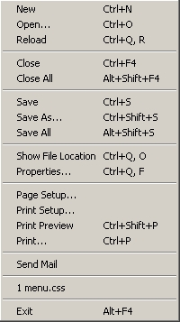

| File Menu | Top Next |
|  |
New : create a new document
Open... : open a document
Reload : synchronize current document with file
Close : close current document
Close All : close all documents
Save : save current document
Save As... : save current document under another filename
Save All : save all documents
Show File Location : allow to see where current file is
Properties... : Show settings and informations of current document/file
Page Setup... : allow to configure the page layout
Print Setup... : allow to configure printer
Print Preview : show all pages before printing
Print... : print current document
Send Mail : create a new mail with current document as attachments
This part shows files witch have been recently opened
Exit : exit the program
|